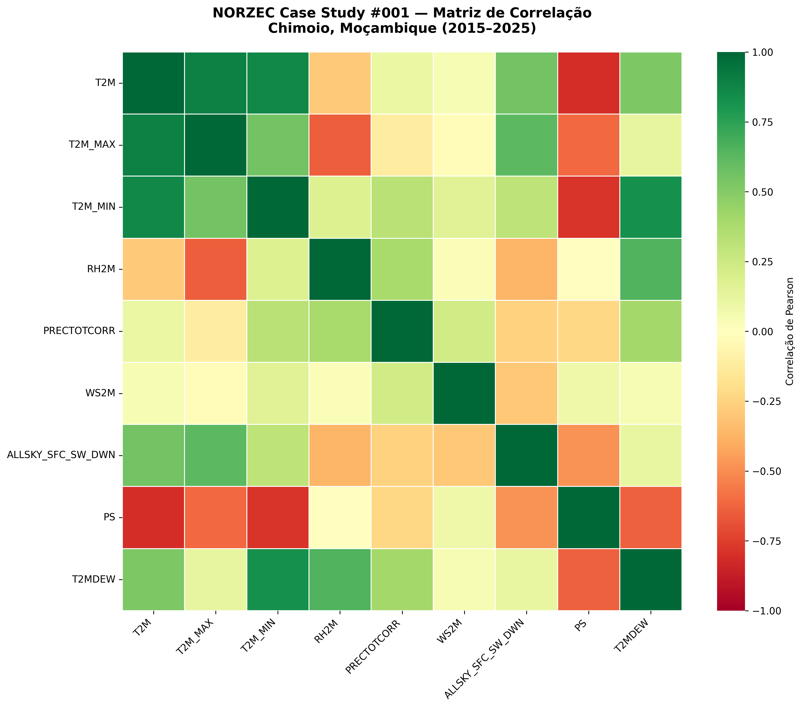
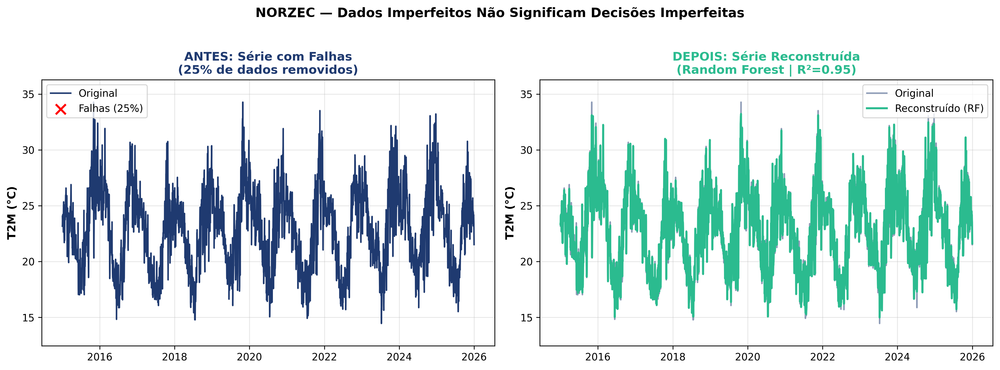
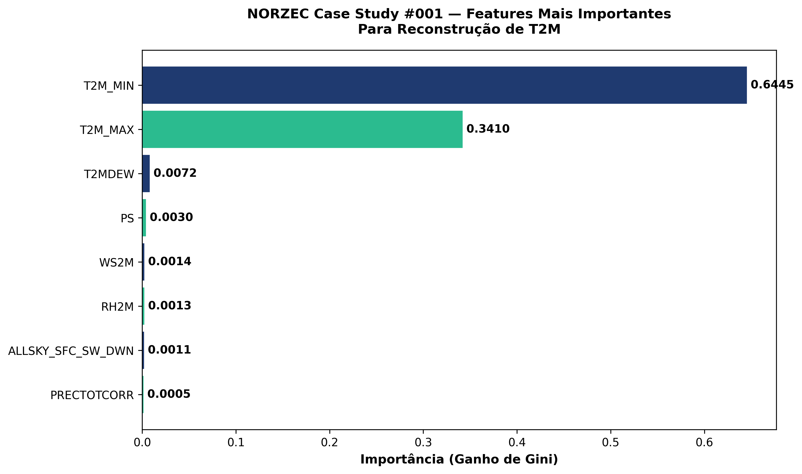
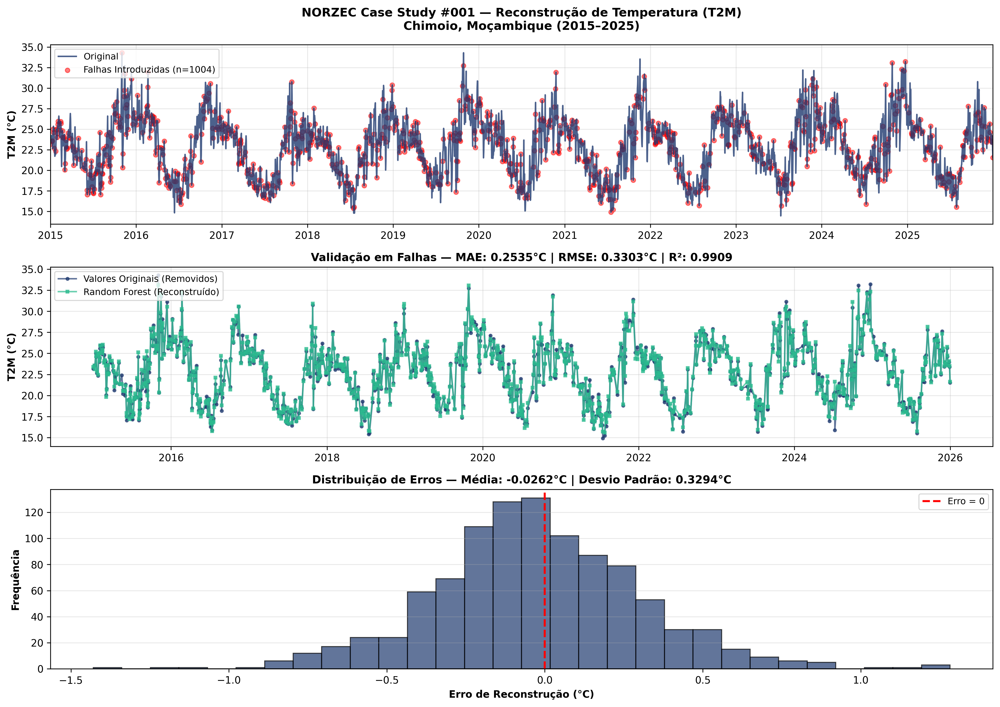

Como recuperar 25% de observações ausentes
sem perda de fidelidade científica
Séries temporais meteorológicas reais são inevitavelmente afetadas por falhas de sensores, interrupções de transmissão e períodos de manutenção. A consequência direta é lacunas que comprometem modelos agronômicos, hidrológicos e de planeamento territorial.
Para replicar este cenário de forma controlada, extraímos 11 anos de dados diários da estação de Chimoio, Moçambique (NASA POWER LARC) e removemos deliberadamente 25% das observações. A questão central: é possível recuperar essas informações com rigor estatístico?
"Dados imperfeitos não significam decisões imperfeitas — desde que se disponha da metodologia correta."
Variáveis analisadas
Antes de qualquer modelagem, é essencial mapear a estrutura de dependência entre variáveis. A matriz de correlação revela quais pares de variáveis partilham informação e, portanto, podem ser utilizados como preditores uns dos outros durante o processo de imputação.

A estrutura de correlação confirma que as variáveis não são independentes — há suficiente redundância de informação para que o modelo aprenda a reconstruir observações ausentes a partir das variáveis disponíveis.
O modelo foi treinado sobre as observações completas e depois aplicado às lacunas artificialmente criadas. A comparação directa entre os valores originais e os reconstruídos quantifica a fidelidade da imputação ao longo de toda a série temporal.

A análise de importância de variáveis (feature importance) quantifica a contribuição relativa de cada preditor no modelo. Este passo é fundamental para validar a coerência física da solução: um modelo robusto deve atribuir maior peso às variáveis que, do ponto de vista meteorológico, são de facto as mais informativas.

Coerência física e robustez estatística comprovadas: as variáveis dominantes no modelo são as mesmas que a teoria meteorológica apontaria como mais informativas.
O desempenho do modelo foi avaliado sobre um conjunto de teste independente de 1.004 registos — observações nunca vistas durante o treino. As três métricas seguintes reflectem a qualidade da reconstrução.

A capacidade de recuperar séries temporais meteorológicas com alta fidelidade tem aplicação directa em qualquer sector que dependa de dados contínuos para suportar decisão. Séries completas eliminam vieses de análise, melhoram a qualidade de modelos downstream e ampliam o horizonte de planeamento.